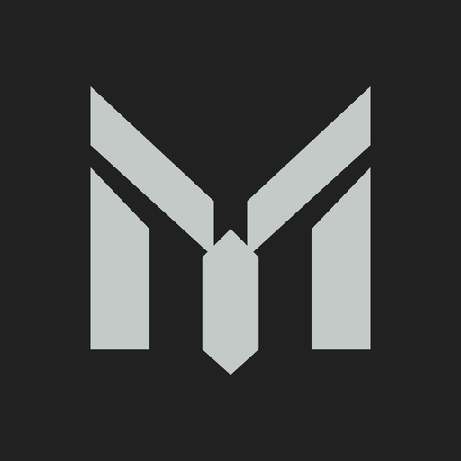

Das offene M im Einsatz.
Ein Produktzeichen aus fünf präzisen Teilen. Titan hält die Form ruhig und eigenständig; das Eisblau bleibt bei Glacius Labs. Diese beiden Anwendungen prüfen die Wirkung im kleinen Format und neben dem Produktnamen.
Quadratisches Produkticon

512 Pixel, solide Hintergrundfarbe, symmetrischer Sicherheitsabstand. Als Produkticon nutzbar; das GitHub-Organisationsbild bleibt Glacius Labs.
README-Kopf auf GitHub
Markitect makes AI-facing engineering knowledge maintainable as a small, typed system.
Das tatsächliche README verwendet dasselbe quadratische Icon neben „Markitect“. Der dunkle Hintergrund hält Titan bei hellem und dunklem GitHub-Theme sichtbar.
Die README-Überschrift nutzt GitHubs normale Schrift statt einer gezeichneten Wortmarke. So bleibt sie lesbar und durchsuchbar; das Icon trägt die Produktidentität.